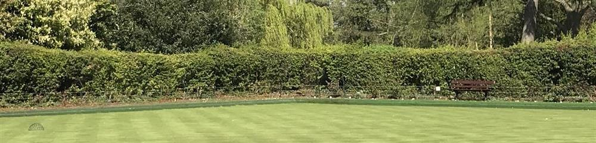

Bowls & membership
What the game actually involves, what it costs to join, and who runs the club.
The game
Get your bowl nearer the jack than theirs.
The aim is to deliver your bowls as close as possible to a white target ball — yellow for the visually impaired — called the jack.
The winner of that end is the player or team whose bowl, or bowls, finish nearer the jack than their opponent's nearest bowl. A match is typically played over 18 ends, or first to 21 points, depending on the format.
It is a game of accuracy and strategy, and the club describes it as suitable for people aged 9 to 90. Bowls has a long memory: the club will tell you Sir Francis Drake was playing it at Plymouth Hoe in 1588.
What a taster session involves
An hour or so on the green with one of the members. Bring a pair of flat-soled shoes; the club provides the bowls, a set of four per person. There is no charge and no obligation.
What it costs
No joining fee.
- Annual membership is less than £200, and there is no joining fee on top of it.
- New members get free coaching — three or four one-hour sessions.
- The taster session itself is free, and the club lends you the bowls for it.
- If you decide to buy your own set later, the club puts the range at roughly £50 second-hand to £350 new.
What you get
More than the bowling.
- Both social and competitive bowling, including inter-club matches.
- Play from 11am to dusk on most days through the season.
- Social events through the year: quiz nights, bingo, barbecues and race nights.
- A club run by its members, for its members.

Who runs it
The 2026 committee.
As published by the club. Two posts are currently recorded as unfilled — if you join and want to be useful, that is where to start.
| Position | Name |
|---|---|
| President | Irene Wiggins |
| Captain | Anthony Muzlish |
| Vice-captain | Gary Welch |
| Hon Secretary | Henryk Cholewa |
| Hon Treasurer | Unfilled |
| Member — catering | Celine Barrett |
| Member | Mike Richardson |
| Hon Match Secretary | Gary Welch |
| Hon Social Secretary | Rob Atack |
| Development | Shashi Dave |
| Green liaison and maintenance | Richard Segalov |
| Vets A | Gary Welch |
| Vets B | Richard Barrett |
| Bidgood | Rob Atack |
| Maintenance | Unfilled |
| Webmaster | Anthony Muzlish |
Come and stand on the green first.
An hour, no charge, bowls provided. Ask through the club's own enquiry form.